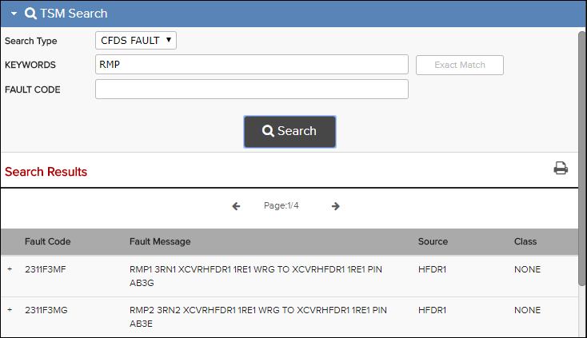

CFDS FAULT is a search type in the TSM Search. For more details about the search fields, refer to TSM Search.
- Open a TSM publication in the Library pane.
- Open the TSM Search.
- From the Search Type drop-down menu, select CFDS FAULT.
-
Do one or more of these options:
- Enter keywords into the KEYWORDS field. Select the Exact Match check box if you want to exactly match the text you entered into the KEYWORDS field.
- Enter a full or partial fault code in the FAULT CODE field.
- Click the Search button.
Matches that meet your search criteria appear in Search Results pane showing ATA code and the fault message. You can click on an entry in the result list to expand the row and see Correlated Warning Messages, Correlated Fault Messages, Identifiers and Possible Causes. You can also open the task by clicking on the document link.

CFDS Fault Search Result